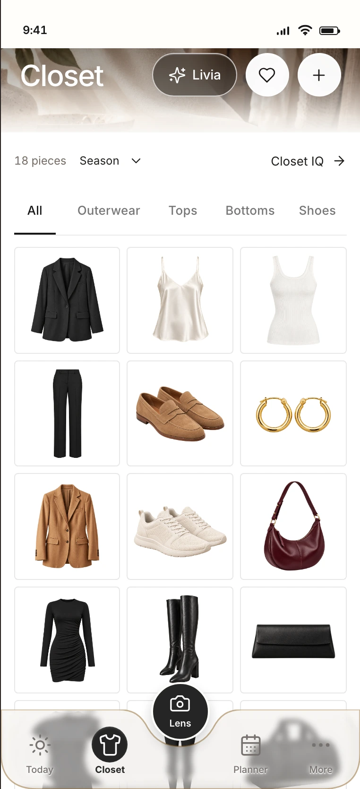
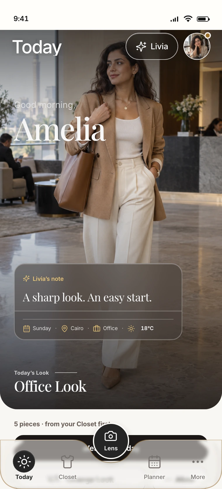
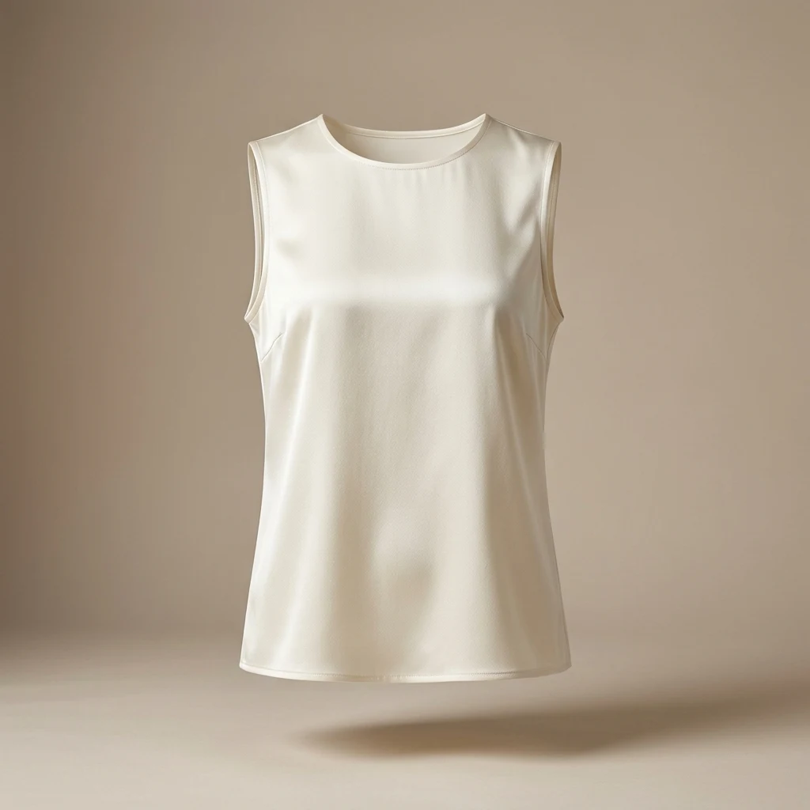
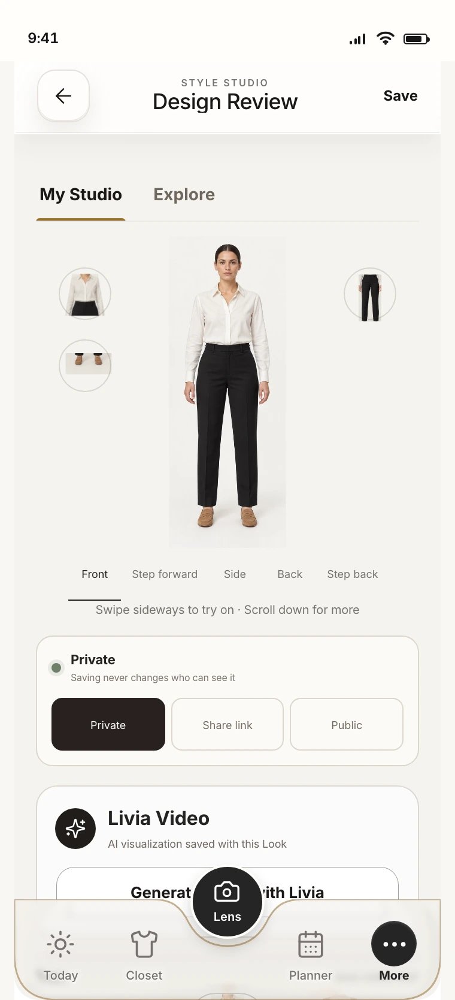
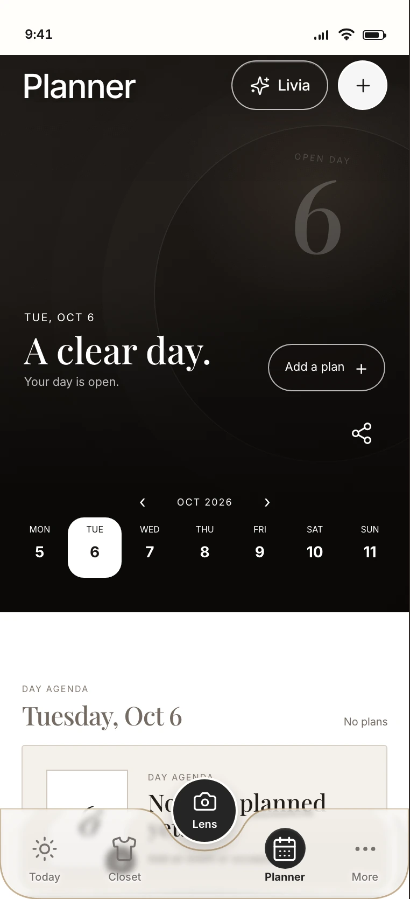

01
Bring your wardrobe together.
Add your clothes to your digital closet so you can see and organise your pieces in one place.
Your wardrobe. More possibilities.
Bring your wardrobe into StyleIQ, discover new outfit combinations, and plan what to wear—with your AI stylist by your side.
Your closet. Your taste. Your everyday style.


Already in your closet.About StyleIQ
You know the feeling.
A full closet.
No idea what to wear.
StyleIQ brings your clothes, outfit ideas, and plans together. See what you own, explore combinations that feel like you, and get guidance from your AI stylist when you need a little inspiration.
Your style starts with you.
We help you put it together.
How it works
Start with the pieces you own.
Then explore what you can do with them.

Add your clothes to your digital closet so you can see and organise your pieces in one place.

Explore outfit ideas with your AI stylist, or put together your own in Style Studio. Save the looks you want to wear again.

Plan looks for upcoming occasions and organise outfits and packing for your next trip.
Your AI stylist
Olivia brings your wardrobe, the weather and your plans into the same conversation. A little guidance, grounded in you.
A considered combination, from your own closet.
Meet your Style Twin
01 — Daytime
A polished look for the plans ahead. Explore a style direction that feels like you.
Your day. Your way.02 — Relaxing
Softer tailoring. Familiar favourites. A different rhythm, with the same personal style.
Ease, with intention.03 — Evening
See your style in a new context. Make space for the looks you reach for after hours.
The evening is yours.Illustrative style previews from StyleIQ.
Thoughtfully styled. Simply you.
01 / 03 Your wardrobe, together.
01 — Digital wardrobe
Keep your pieces together in a digital closet. Browse what you own and rediscover the items you want to wear more.
A fresh perspective on familiar pieces.02 — Your AI stylist
Ask your AI stylist for outfit ideas around your wardrobe, taste, and occasion. Explore combinations, make your own adjustments, and save your favourites.
Your taste leads the way.03 — Calendar & trips
Keep looks ready for the occasions on your calendar. Heading away? Bring your outfit plans and packing list together before you go.
Wherever the day takes you
Bring your outfit plans and packing list together before you go.
See StyleIQ in action
Take a closer look at your closet, outfit ideas, and plans—all together in StyleIQ.
Style Studio · An illustrative walkthrough

Your pieces, ready to explore.
01 — Style Studio
Your own pieces are the starting point.
02 — Style Studio
A favourite blazer sets the direction.
03 — Style Studio
Explore pieces that work with your first choice.
04 — Style Studio
Replace a top. See a different combination.
05 — Style Studio
The details make the outfit feel complete.
06 — Style Studio
Save your look, wear it today or plan it for later.
Discover · Closet intelligence
Explore style ideas and see how a piece could work with your wardrobe.
A starting point for a new combination.
Familiar pieces, seen in a new light.
Consider the details that bring it together.
An example from the app
Illustrative compatibility and outfit data.
A few things you might be wondering
StyleIQ is a wardrobe and styling app that helps you organise your clothes, explore outfit ideas, and plan what to wear, with guidance from an AI stylist.
Start with the clothes you already own. Add pieces to your digital closet and explore new ways to put them together.
Yes. Use Style Studio to combine pieces and save your favourite looks.
Use the calendar to organise upcoming looks and Trips to bring outfit planning and packing together.
Get the app · Meet your wardrobe again
Bring it together with StyleIQ. Discover outfit ideas, plan your looks, and make more of the pieces you own.
App Store and Google Play destinations will be added here when confirmed.